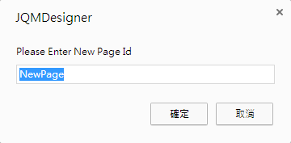

对于开发一个 App 而言，最重要的当然就是手指的触控了！但对于熟悉 HTML 与 CSS 等网页工具的开发者来书，手指与鼠标的操作行为是截然不同的，如何能够针对手持式装置平台来设计手势，便成为了开发者的一个重要课题。
今天大家有福了！因为 EZoApp 也有提供了利用手势滑动来转换页面的机制，使用者只要撰写部分的 JavaScript ，就能够利用手势在不同页面之间切换，完全设计出 App 的操作行为，而因为使用网页的语法，在各种手持装置平台都能够顺利运作，真是设计者与开发者的一大福音！
对于 JavaScript 不熟悉的朋友也不用担心，以下会提供相关的程序代码给大家参考，照着范例进行，就算不熟悉也可以做出相当有水平的产品喔！
范例链接：
结合 JavaScript 应用 - 滑动页面实作

滑动页面顾名思义，就是用手指来左滑右滑页面，因此我们必须要新增页面来进行滑动的行为，这里我们使用 EZoApp 所提供的页面新增功能，只要点选下方 page 的黑色区域，就会打开页面的版块，再次点选就会收合起来。

打开 Page 版块之后，可以看到上方有五个选项小图标，分别是新增页面，重新命名页面、复制页面、删除页面与重新刷新版面，我们只要点选新增页面的图示，就可以新增页面了。

点选新增页面图示后，就会弹出窗口要我们命名新的页面，这个名称不能重复，因为页面名称在 HTML 当中是 id 的值，所以是不能重复的。
就这样新增三个页面，分别给予名称，以及塞入一些内容做为页面的辨识。( 这样滑到哪一页才清楚 )

只有新增页面是不能够进行滑动的，接着我们就要来撰写一些 JavaScript 来让页面滑动，这里提供给大家基本的页面滑动写法，只要复制在程序代码编辑区的 js 页签内贴上，按下 preview 的按钮就可以左滑右滑啰！( 记得 id 的名称要写对，不然就无法顺利进行 )
var pages = ['Page0', 'Page1', 'Page2']; //页面的名称(id)
$(document).on('pageinit', '#Page0', function () {
$(document).on("swiperight", function () { //往右滑的动作
var pageId = $.mobile.activePage.attr('id');
var idx = pages.indexOf(pageId); //页面数量
idx = idx - 1 < 0 ? pages.length - 1 : idx - 1; //让页面滑到底的时候会循环
$.mobile.changePage('#' + pages[idx], { //jQuery Mobile 的手势动作
'transition': 'slide',
'reverse': true
});
});
$(document).on("swipeleft", function () { //往左滑的动作
var pageId = $.mobile.activePage.attr('id');
var idx = pages.indexOf(pageId); //页面数量
idx = ++idx % pages.length; //让页面滑到底的时候会循环
$.mobile.changePage('#' + pages[idx], { //jQuery Mobile 的手势动作
'transition': 'slide'
});
});
});

就这样我们可以轻松制作出一个简易的滑动效果啰！
范例链接：
结合 JavaScript 应用 - 滑动页面实作